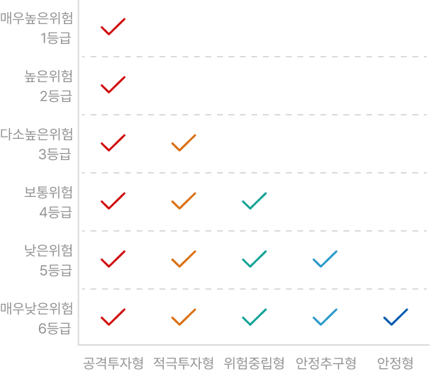

김농협님의 투자자성향은
적극투자형(진단점수 70점)입니다
투자자성향 진단일(2024.11.11 분석결과)
- 01 고객님께 해당하는 항목을 선택해 주세요
- 1-1 고객님의 연령대를 선택해 주세요
실명번호 기준으로 자동 확인됩니다.
- 1-2 고객님의 월소득을 선택해 주세요
-
- 1-3 고객님의 월소득을 선택해 주세요
-
- 02 고객님께 해당하는 항목을 선택해 주세요
- 2-1 고객님의 재산상황을 선택해 주세요
-
- 2-2 고객님의 총 자산 대비 금융자산의 비중을 선택해 주세요
-
- 2-3 보유한 금융자산(전체 금융기관 내) 중 투자성상품의 비중에 해당하는 것을 선택해 주세요
-
- 03 금융상품에 대한 지식 수준에 해당하는 것을 선택해 주세요
-
- 04 아래의 설명을 읽고 맞다고 생각하는 답변을 선택해 주세요
- 4-1 펀드와 신탁상품은 원금이 보장되는 상품이다
-
- 4-2 펀드와 신탁상품에서 수익이 발행하면 일부 비과세 대상을 제외하고 세금이 부과된다
-
- 4-3 은행에서 가입한 모든 펀드와 신탁상품은 예·적금과 같이 예금자보호 대상이다
-
- 05 감내할 수 있는 손실 감수 수준에 해당하는 것을 선택해 주세요
-
- 06 투자 상품의 일반적인 투자기간을 선택해 주세요
-
- 07 투자 경험이 있는 금융투자상품이 있는 항목을 선택해 주세요.(중복 선택 가능)
-
- 08 과거 가입한 투자성 상품을 해지한 목적을 가장 잘 나타낸 것을 선택해 주세요.(중복 선택 가능)
-
- 09 파생결합증권 또는 파생상품에 투자한 경험이 있다면, 투자 기간은 얼마나 되세요?
-
- 10 본인의 투자자성향과 맞다고 생각하는 투자자성향을 선택해 주세요
-
투자성향별 적합 상품 분류
